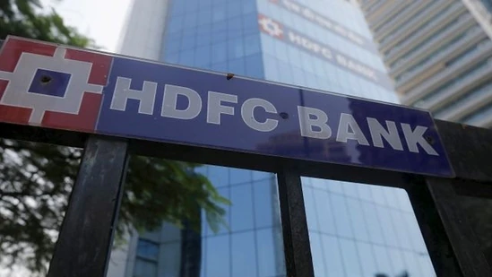
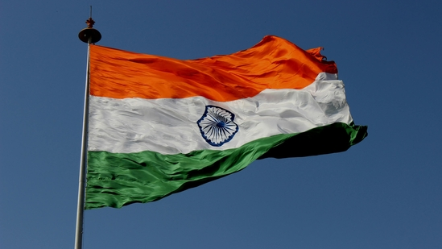
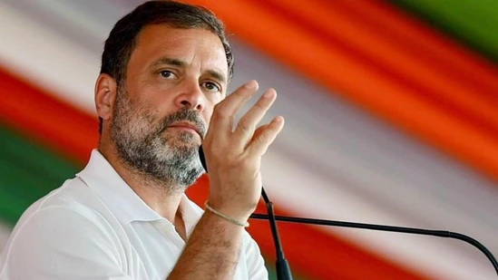
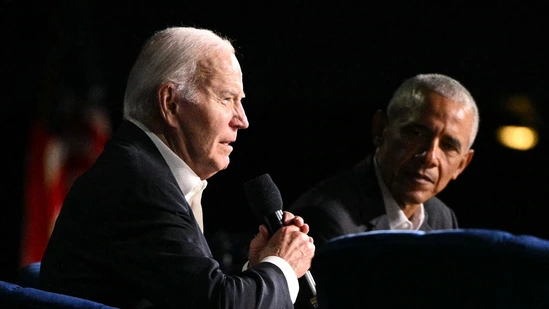
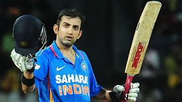
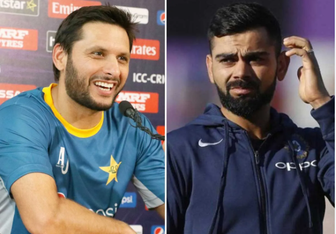
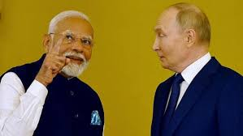

Sensex and Nifty hit their fresh record high levels today (July 12) amid heavy buying in IT stocks after TCS announced its June quarter earnings. BSE Sensex zoomed 996.17 points to hit all-time high of 80,893.51 while NSE Nifty jumped 276.25 points to a new lifetime peak of 24,592.20.
HDFC Bank is conducting a system upgrade on July 13 aimed at enhancing customers' banking experience by improving performance speed, it said. The scheduled downtime is on Saturday and will begin from 3:00am and end at 4.30pm on the same day.
Delhi, The Supreme Court on Friday granted interim bail to Delhi Chief Minister Arvind Kejriwal in a money laundering case lodged by the ED in the alleged excise policy scam but he will remain in jail as the CBI had later arrested him in a related matter.
Congress criticised BJP-ruled states on Thursday following a viral video showing job aspirants in a chaotic queue, resulting in a railing collapse at the interview venue, labelling it an “unemployment disease.” According to a PTI report, the incident unfolded when nearly 800 people arrived for walk-in interviews held by a company offering 40 vacancies in Ankleshwar in Gujarat's Bharuch district.
US elections has taken a very shocking turn with new claims being made that former President Barack Obama is secretly working to ensure Joe Biden drops out of the race to White House. And this ‘resentful treatment’ is making Biden dig in further.
Gautam Gambhir has requested the BCCI to consider former South Africa pacer Morne Morkel as Team India's bowling coach, reported Cricbuzz on Thursday. Morkel is the latest to float after Vinay Kumar and Zaheer Khan. The BCCI was not too keen on roping in Vinay Kumar. According to media reports, discussions have taken place on Zaheer, but now Gambhir has shown his interest in Morkel, who was Pakistan's bowling coach during the ODI World Cup in India last year but ended his contract with PCB prematurely after the tournament ended.
As the 2025 Champions Trophy finds itself in a state of limbo following India's reported stance of not travelling to Pakistan, former captain Shahid Afridi has urged the BCCI to think otherwise. Afridi wants India to come and play in Pakistan, as it will not just help the cricketing ties between two nations grow but also give the crowd in his country the opportunity to witness Virat Kohli play.
Most auto stocks have been on a roll in the last one year owing to a confluence of factors, including demand revival, new launches and stable raw material prices. The Nifty Auto index has surged 69 per cent in the last 12 months, with some of its components, such as Exide Industries, Tata Motors DVR and Bharat Forge skyrocketing about 100-140 per cent.
The United States on Tuesday reiterated its concerns over India’s ties to Russia and said it has had conversations with New Delhi regarding Prime Minister Narendra Modi’s ongoing visit to Moscow but refused to divulge the contents of these.
ChatGPT, launched in November 2022, is not available in China because the government imposes restrictions on most major foreign websites. However, Chinese developers were able to access OpenAI’s Application Programming Interface (API), which allowed them to integrate key functions of ChatGPT.